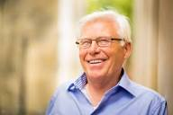
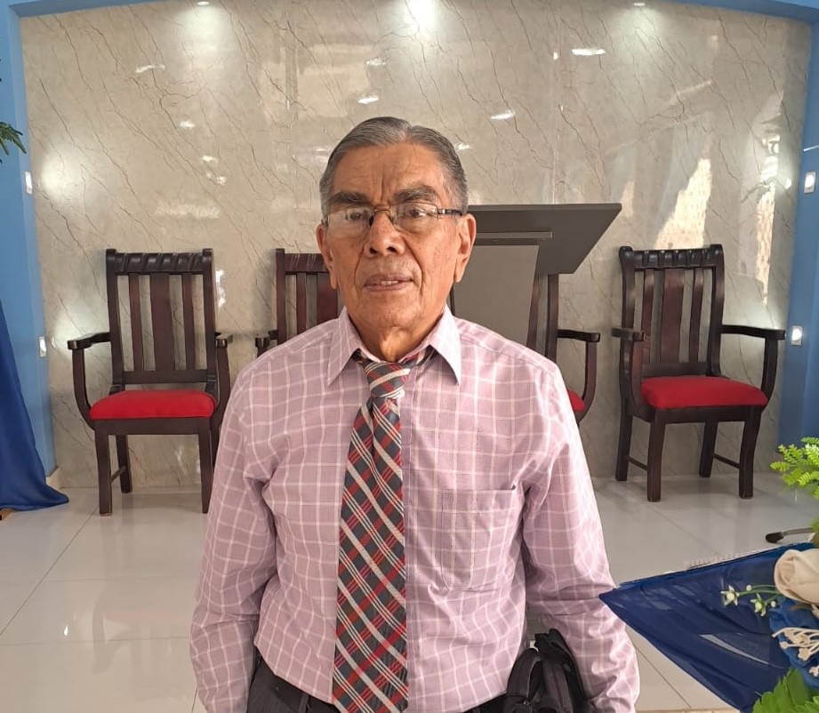

La hermana Juanita viuda de Lacayo soño que en su finca se levantaría una congregación. Su yerno, el
hermano Julio Rocha, donó el terreno en 1999.
El terreno donde hoy se levanta la iglesia pertenecía al hermano Julio César Rocha, quien ahora descansa en la
presencia del Señor. Antes de él, la propietaria había sido su suegra, la hermana Juanita viuda de Lacayo, una mujer
evangelista y llena de fe. Ella había tenido un sueño en el que veía que en este lugar se levantaría una iglesia para
la gloria de Dios. Aunque partió con el Señor sin ver cumplida aquella visión, la promesa permaneció viva en el corazón
de quienes la conocieron.

El hermano Roberto Cadenas había recibido una palabra: que el Señor le enviaba hacia
Carretera Masaya, por lo que aceptó empezar la obra con la seguridad que Dios lo enviaba.
En 1999, el hermano Julio César Rocha abordó al hermano Roberto Cadenas y le dijo que era el candidato para levantar
aquella nueva obra. Después habló con el hermano Mojica, quien recientemente había asumido la
pastoral en la Primera Iglesia Apostólica de la Fe en Cristo Jesús de Managua. El pastor Mojica le preguntó al hermano
Cadenas si estaba dispuesto a asumir aquel reto. Tiempo atrás, un hermano le había compartido una visión en la que veía
que el Señor le enviaba hacia Carretera Masaya, al lado derecho, por lo que aceptó con seguridad que Dios lo enviaba.
El terreno medía veinticinco varas de frente y era parte de una finca. Cuando llegó al terreno, el hermano Cadenas encontró
un lugar muy difícil. Era prácticamente un hoyo; el agua se empozaba y a los lados y al fondo había un cerro lleno de
material selecto.